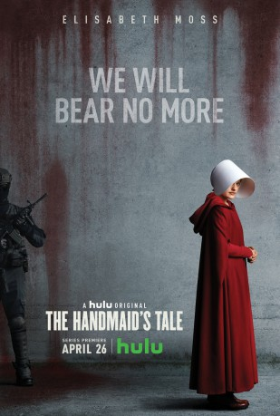

")
Alternativ: The Handmaid's Tale
Auszeichnungen: 2 GoldenGlobes gewonnen 1 BAFTA-Awards gewonnen
 
 IMDB-Wertung: 8.6 / 10
IMDB-Wertung: 8.6 / 10  Metascore:
Metascore: 
Die Zukunft meint es nicht gut mit den Menschen. Umweltkatastrophen haben dafür gesorgt, dass ein Großteil der weiblichen Bevölkerung unfruchtbar geworden ist. Unter dem Namen Gilead hat sich ein Teil der USA abgespalten.Desfred ist eine der wenigen noch fruchtbaren Frauen und arbeitet als Magd im Palast des Commanders. Sie gehört einer Kaste von Frauen an, die zu sexueller Dienerschaft gezwungen werden als Teil eines letzten, verzweifelten Versuchs, Nachkommen für das verwüstete Land hervorzubringen. Desfred hat nur ein Ziel: die Tochter wiederzufinden, die man ihr genommen hat. Auf der Suche muss sie sich zwischen Commandern, deren grausamen Ehefrauen und anderen Mägden behaupten, von denen jeder eine Spionin für Gilead sein könnte.
Jahr: 2017
Dauer: 57 Minuten
FSK:
Land: USA Studio: HuluTonspuren:
Untertitel: Deutsch,
Auflösung: 720p (1280x720) Größe: 1392 MB
Genre: Drama, Sci-Fi, TV-Serie
Regisseur: Mike Barker, Reed Morano, Kate Dennis, Floria Sigismondi, Kari Skogland
Drehbuch: Ruben Östlund
Soundtrack:
Darsteller:
 Elisabeth Moss als June Osborne 23 episodes, 2017-2018
Elisabeth Moss als June Osborne 23 episodes, 2017-2018 Yvonne Strahovski als Serena Joy Waterford 22 episodes, 2017-2018
Yvonne Strahovski als Serena Joy Waterford 22 episodes, 2017-2018 Max Minghella als Nick Blaine 22 episodes, 2017-2018
Max Minghella als Nick Blaine 22 episodes, 2017-2018 Amanda Brugel als Rita 22 episodes, 2017-2018
Amanda Brugel als Rita 22 episodes, 2017-2018 Joseph Fiennes als Fred Waterford 21 episodes, 2017-2018
Joseph Fiennes als Fred Waterford 21 episodes, 2017-2018 Ann Dowd als Aunt Lydia 20 episodes, 2017-2018
Ann Dowd als Aunt Lydia 20 episodes, 2017-2018 Samira Wiley als Moira 20 episodes, 2017-2018
Samira Wiley als Moira 20 episodes, 2017-2018 Alexis Bledel als Ofglen 17 episodes, 2017-2018
Alexis Bledel als Ofglen 17 episodes, 2017-2018 Ever Carradine als Naomi Putnam 8 episodes, 2017-2018
Ever Carradine als Naomi Putnam 8 episodes, 2017-2018 Stephen Kunken als Commander Warren Putnam / ... 8 episodes, 2017-2018
Stephen Kunken als Commander Warren Putnam / ... 8 episodes, 2017-2018 Sydney Sweeney als Eden 8 episodes, 2018
Sydney Sweeney als Eden 8 episodes, 2018 Robert Curtis Brown als Andrew Pryce / ... 5 episodes, 2017-2018
Robert Curtis Brown als Andrew Pryce / ... 5 episodes, 2017-2018 Tim Ransom als Whitford 1 episode, 2017
Tim Ransom als Whitford 1 episode, 2017 Kim Roberts als Christine 1 episode, 2017
Kim Roberts als Christine 1 episode, 2017 Zabryna Guevara als Mrs. Castillo 1 episode, 2017
Zabryna Guevara als Mrs. Castillo 1 episode, 2017 Kristian Bruun als Doctor 1 episode, 2017
Kristian Bruun als Doctor 1 episode, 2017 Dan Beirne als Barista 1 episode, 2017
Dan Beirne als Barista 1 episode, 2017 Adrian Griffin als Commander Davidson 1 episode, 2017
Adrian Griffin als Commander Davidson 1 episode, 2017 Michael Caruana als Roger 1 episode, 2017
Michael Caruana als Roger 1 episode, 2017 Ishan Morris als Guardian Nurse 1 episode, 2017
Ishan Morris als Guardian Nurse 1 episode, 2017Datei: X:\HD-Serien\Handmaids Tale S01, The\The Handmaids Tale S01E01.mkv seit 12.03.2018
Festplatte: HD Serien(A-H)
 Es gibt insgesamt 182 Filme in der Gruppe 'HD-Serien'
Es gibt insgesamt 182 Filme in der Gruppe 'HD-Serien'